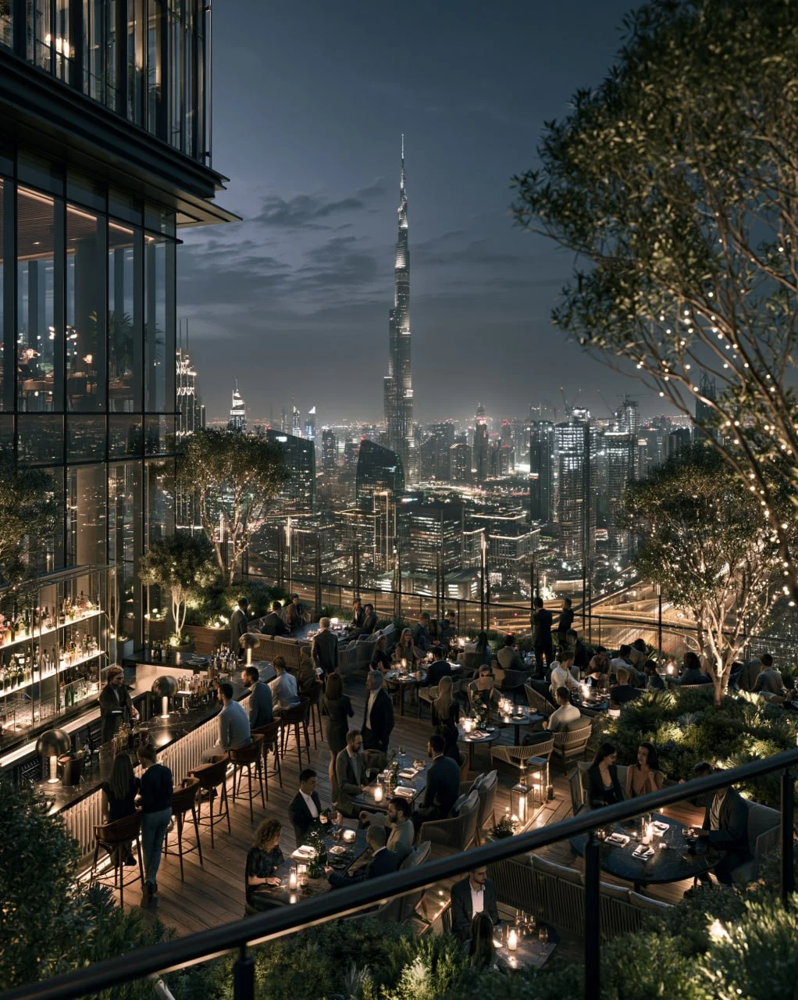

SKYLINE VIEWS • LUXURY • NIGHTLIFE
Dubai's skyline is one of the most recognizable in the world, and rooftop venues provide some of the best ways to experience it.
Dubai's architecture, waterfront districts and year-round hospitality culture have made rooftop venues a major part of the city's lifestyle scene.
Visitors can enjoy panoramic views of Burj Khalifa, Dubai Marina, Palm Jumeirah and the Arabian Gulf while experiencing world-class hospitality.
Downtown Dubai offers some of the city's most iconic skyline views.
Popular rooftop locations provide direct views of:
? Burj Khalifa
? Dubai Fountain
? Downtown Boulevard
? Dubai Opera District
Dubai Marina combines skyscrapers, waterfront scenery and modern architecture, making it one of the most photogenic districts in the city.
Visitors can enjoy:
? Marina skyline views
? Yacht harbor scenery
? Sunset photography
? Waterfront dining
Palm Jumeirah features luxury rooftop venues overlooking the Arabian Gulf and Dubai skyline.
Many venues are integrated into luxury resorts and premium hospitality destinations.
The most popular times include:
? Sunset hours
? Evening dining
? Weekend gatherings
? Winter season (October?April)
Dubai rooftops offer some of the city's most impressive photography locations.
Popular subjects include:
? Burj Khalifa
? Downtown skyline
? Dubai Marina
? Palm Jumeirah
? Sunset views
Rooftop venues appeal to:
? Tourists
? Couples
? Business travelers
? Photographers
? Luxury lifestyle enthusiasts
Dubai's rooftop venues combine architecture, hospitality and breathtaking views into a uniquely urban experience. Whether you're interested in photography, dining, networking or simply enjoying the skyline, rooftop destinations provide a memorable perspective of the city.